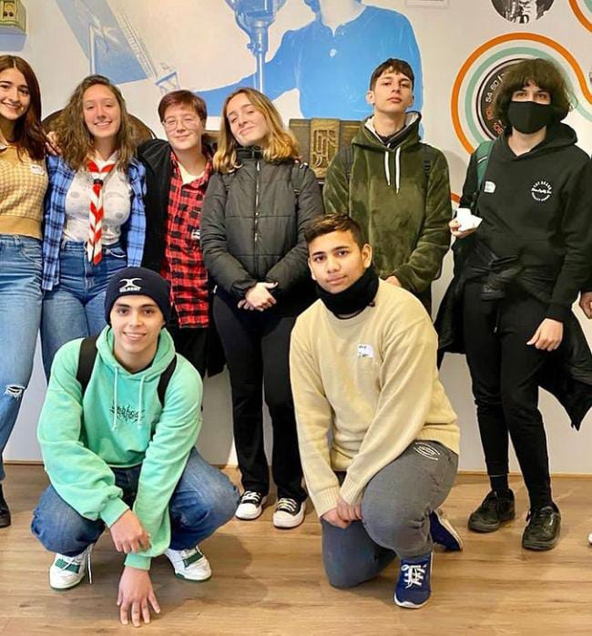

Consejo Consultivo 4to B
Por Azul Peluso de 4 to B
Estuve concurriendo a los encuentros del Ministerio Público Tutelar acompañada de mi compañero Lautaro Ponce y mi profesor de Formación Ética y Ciudadana Luciano Pagano.
En los encuentros éramos muchos chicos de distintos puntos de la Ciudad Autónoma de Buenos Aires de entre 14 y 17 años. En estos encuentros hablamos
muchos temas que afectan a niños, niñas y adolescentes, el primer encuentro fue el de bienvenida, nos presentamos, hablamos de las cosas que nos gustan, qué
expectativas teníamos y de que nos gustaría hablar.
El primer encuentro me encantó, estuvo muy bueno conocer gente de mi edad que esté interesada en nuestros derechos. En el segundo encuentro hablamos de la
comunicación del Ministerio, que redes sociales usamos más y si el Ministerio tenía una buena llegada por ese medio hacia los jóvenes, me pareció muy interesante.
En el tercer encuentro hablamos sobre el maltrato y las formas de violencia hacia niñas, niños y adolescentes, qué hacer si nos damos cuenta de un
caso de maltrato, y cómo eso puede afectarles. En el cuarto encuentro hablamos de acceder a la justicia, que pensábamos de eso y nos dieron consejos de cómo
hacerlo. En el último encuentro hablamos sobre los derechos de los niños y los adolescentes y como el Estado trabaja para cumplirlos.
Estos encuentros me gustaron mucho y me dieron muchos aprendizajes.
